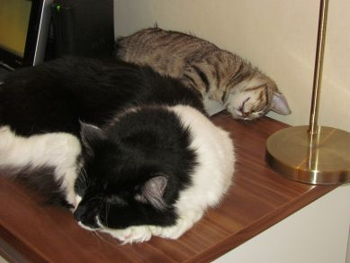

SAKKE JA SAANAOPPIMATERIAALIA NETISSÄ VUODESTA 1999 LÄHTIENPSYKOLOGIAN PIKALINKIT PSYKAN VIDEOABIKURSSI: PS7 ABI KERTAUSKURSSI (OPS 2016-): PS1 Psyykkinen toiminta ja oppiminen PS2 Kehittyvä ihminen PS3 Tietoa käsittelevä ihminen PS4 Tunteet, psyykkinen hyvinvointi ja mielenterveys PS5 Yksilöllinen ja yhteisöllinen ihminen SUURI YHTEISHAASTATTELU! Miten yhteiselo on alkanut sujua? SAKKE: Pikku hiljaa olen tottunut tähän vauhtiin. SAANA: Muuten hyvä, mutta lisää vauhtia. Mikä toisissanne on parasta? SAKKE: Parasta? Saana nukkuu paljon. SAANA: Sakke on ihanan pehmeä purulelu! Voiko tyttö- ja poikakissa olla ystäviä? SAKKE: Voi, kunhan tuo Saana ensin leikataan. SAANA: Voi, kunhan minä vähän tuota Sakkea leikkelen! Miten on, onko tässä talossa hyvä elää? SAKKE: On. Ehdottomasti. Tai oli tähän asti. SAANA: On. Mutta naisarvon perään huudan! Voiko pohjalaanen ja keskisuomalainen elää yhdessä? SAKKE: Saanassa sitä pohjalaasta verta enemmän on. SAANA: Voi, kunhan Sakke tietää paikkansa. Mikä olisit, jos et olisi kissa? SAKKE: Olisin ilves tai karhu, luonnon peto. SAANA: Olisin prinsessa tai rokkimimmi, tosi miesten nielijä siis - ja sanan varsinaisessa merkityksessä nielisin miehiä, mjam... Mulla muuten on nälkä, milloin tämä haistattelu oikein loppuu?? Tiu tiu... Sakke - persoona ennen muuta Saana - olen suomalainen Sakke ja Saana - yhdessä enemmän |
SAKKE JA SAANA - YHDESSÄ ENEMMÄNKuvia "Sakke-poikalaisesta" ja "Saana-neitokaisesta" kaikille kissaystäville iloksi
Kun taloon tulee uusi kissa, on se aina kriisin paikka. Se on stressi ja kriisi uudelle tulokkaalle, joka on joutunut jättämään emonsa ja sisaruskatraansa sekä turvallisen kotiympäristön, mutta se on stressi ja kriisi myös vanhalle kissalle, joka on saanut elää yksinvaltiaana kaiken huomion keskipisteenä. Siksi onkin tärkeää, että omistajat tekevät kaikkensa, että molempien kissojen stressi pysyisi mahdollisimman alhaisella tasolla. Näin mekin päätimme tehdä.
En ole ikinä tykännyt kemiasta, mutta nyt luotin kemiaan. Hankin eläinsairaalasta Feliway -feromonihaihduttimen, joka tuottaa "hyvää mieltä" kissoille. Pistorasiaan laitettava laite maksoi vajaan 40 euroa ja sen tehtävä on levittää kissojen normaalia hyvän mielen kemiallista ainetta huoneistoon. Niin hyvin uskon tämän laitteen toimineen, että ostin jopa täyttöpullon! Toiset uskovat laitteeseen, toiset eivät. Minä en ennen uskonut, mutta nyt uskon. En olisi voinut uskoa, että muutos varsinkaan Saken kohdalla menisi muutoin näin hyvin. Sitten päätin, että kun uusi kissa tulee, vanha ei saa unohtua. Olenkin tehnyt niin, että Sakke saa syliä todella paljon. Saken vanhat rutiinit ovat säilyneet lähes muuttumattomina - ainoa muutos on tapahtunut siinä, että Sakke itse on muuttanut rutiinejaan siksi, että se haluaa seurata pienen Saanan touhuiluja ja leikkejä. Mutta muutoin, Sakke saa edelleen nukkua jalkopäässäni ja se on vain Saken paikka, kunnes ja jos Sakke antaa luvan Saanalle nukkua vieressään (vielä ei ole antanut). Vain Sakke saa olla parvekkeella. Olemme toistaiseksi pitäneet tästä kiinni. Sakella täytyy olla oma paikka, jonne mennä rauhoittumaan ja jonne pieni herhiläinen ei pääse. Kun annan kissoille ruokaa, annan ensin Sakelle ja estän Saanan pääsyn Saken kupille. Saken kuppi on Saken kupin paikalla. Saanan kuppi on vieressä, mutta kolmenkymmenensentin päässä. Ja tässä välissä on hyvä mainita, miten menee nyt, kun vuosi on jo 2018, Saana on yli viisivuotias ja Sakke kohta 11 v. Rauha maassa. Kissat eivät pärjäisi ilman toisiaan. Jos toinen on edes kadoksissa sängyn alla, alkaa toinen etsimään toista. Yhdessä syödään. Yhdessä ollaan parvekkeella. Yhdessä katsotaan lintuja pöydältä. Yhdessä ja yhtä aikaa nukutaan samassa sängyssä. Välillä vähän ajetaan toisiamme takaa, koska se on hauskaa kerrostalohippasta. Saanasta kasvoi vähän painavampi kissa kuin Sakesta, joka aiheutti sen, että halutessaan Saana antaa kyllä Sakelle vähän turhankin paljon kyytiä. Mutta ilman Saanaa, Sakke on aivan ihmeissään ja ilman Sakkea, Saana miukuu ja ihmettelee, että missä Sakke-veli nyt on. (1.1.2018) Sopeutuminen on käynyt yllättävän hienosti. Saana tuli taloon niin pienenä neitosena, että on jo siksikin tottunut ja leimaantunut meihin sekä Sakkeen todella hienosti. Saana kehrää kuin V8-moottori niin minun, vaimon kuin poikani sylissä ja Sakenkin hienovaraisessa tuuletuksessa. Saanan näkökulmasta kaikki näyttää olevan tosi hienosti. Sakella oli alkuvaikeuksia. Miten ihmeessä tähän uuteen outoon olioon, joita oli tähän asti nähnyt vain ikkunalasin takaa, oikein pitäisi suhtautua. Onni taaskin oli se, että Saana oli niin pieni. Vaikka korostankin, että kissanpentu tulisi ottaa vasta 12 viikon ikäisenä. Meidän tilanteessa harkitsin asian nimenomaan näin juuri monista syistä: Saanan vieroitus kotona, Saanan väiveet ja muut loiset, Saken persoonan tunteminen ja itselläni mahdollisuus sairauteni vuoksi olla koko ajan kotona. Myös se, että Saana saisi mallin Sakessa eli ei jäisi ilman kissaa, jolta oppia kissamaisuutta, oli tärkeä asia siinä, että päätin ottaa Saanan jo niin pienenä meille. Saanalla siis kaikki ok. Sakelle vaikeinta on ollut se, että Saana on vienyt Sakelta "tilaa". Se, mikä oli ennen vain Saken, on nyt sekä Saanan että Saken. Siksi meillä on niitä vain Sakelle rauhoitettuja paikkoja. Saana haluaisi olla koko ajan Sakkea lähellä. Oli sitten kysymys taistelutilanteesta (leikkitappelusta tietysti) tai iltaunista, niin Saana hakeutuu Saken lähelle. Tämä stressaa Sakkea, mutta yhä enemmän olemme nähneet, miten Sakke on alkanut pitää omasta roolistaan isona kissana, joka ottaa vastaan hyökkäyksiä ja yhdellä tassun heilautuksella kääntään Saanan selälleen maahan satuttamatta "pikkusiskoaan". Yhtä lailla Sakke alkaa nuolemaan Saanaa, joka tulee yöunia varten Saken reviirille eli ihan Saken "iholle". Sakke ei kuitenkaan vielä anna Saanan jäädä siihen. Kaikki näyttää siis edistyvän hyvään suuntaan. Aivan aluksi eli pari viikkoa, Saken reaktio oli tavallisesti aina jonkinlainen naukaisu tai tuhahdus ja pois meno. Sitten kaikki onneksi alkoi muuttua, ja nyt sisarukset (niitähän ne nyt ovat) syövät yhdessä vierekkäin, lepäilevät vierekkäin päivisin, autossa ovat hattuhyllyllä yhdessä vierekkäin ja muutenkin pitävät toistensa seurasta. Ja hienointa on ollut huomata Sakessa se, että jos Saanaa ei vähään aikaan näy, Sakke alkaa etsimään Saanaa! 
Menossa putkileikki ja mato-onginta Nukutaan yhdessä ja heräillään yhdessä Pieni tappelunnujakka on aina paikallaan Tarviikohan tässä talossa miettiä, kuka määrää kaapin paikan? Saken ja Saanan kuulumisista voit lukea lisää jatkossa tältä sivulta. Tulossa totta kai uusia kuvia siitä, miten näiden kahden täysin erilaisen kissan hynttyyt pystytään lyömään yhteen mahdollisimman vähillä tuhoilla ;) UUSIMMAT SAKEN JA SAANAN SEIKKAILUT! ;) Nykyään Saanalla ja Sakella menee tosi mukavasti! Painitaan yhdessä, syödään yhdessä, nukutaan yhdessä, leikitään yhdessä, käydään asioilla yhdessä, tehdään kaikki yhdessä - paitsi ne asiat, joihin Saana neitokainen ei vielä yletä. Tässä tapahtumia joulukuun 4.-5. päivältä 2012. 
Saana: "Hei, älä tule häiritsemään sen kameras kanssa. Sakke luulee, että mä en kuule sitä, kun se aikoo just nyt hyökätä mun kimppuuni!!" --- Sakke: "Onko sinulla arvoisa ihminen ollut joskus sellainen tunne, että sinulle läheinen ihminen on jotenkin vainoharhainen?" * * * (VOIT ILMOITTAUTUA, JOS SULLA SATTUU OLEMAAN TARPEEKSI FYFFEÄ TAI PARI SATAA PURKKIA SHEEBAA, TAI OLET PAREMMAN NÄKÖINEN - TAI EDES LUONTEINEN MISU KUIN TOI SAANA): * * * Kontaktilajikoulutus osa 1: (kuva oikealla) "Siis jos toi Saana hyökkää nopealla vauhdilla, niin on paras käyttää sen omaa hyökkäysvoimaa avuks, ja niin ku sitten pieni väistö ja sitten vasen jalka eteen ja oikealla tassulla nopea heitto, nii jo lähti." Kontaktilajikoulutus osa 2: "No, jos olet rauhassa istuskelemassa jossain ja sitten toinen yrittää yllättää ikäänku alakautta, niin ei ku tassulla korville, että roikaa, nii jo lähti." Kontaktilajikoulutus osa 3: "Jos toi Saana esimerkiks käy oikein reteesti kimppuun ja luulee voittavansa sut, ja puree sua kurkusta, niin...tota, parasta taputtaa tassulla tatamia (siis niinku kontaktilajilattiaa) ja huutaa vaikka apua...APUAA!!!! * * * Saana: "Tiu tiu... Sakke, nukut sä? Ku se ääliö Jyrki jätti vaan ton riistakameran vahtimaan, niin laitetaanko sen tietsikka täysin sekasi?" Sakke: "Mää yritän nukkua. Sitä paitsi se kamera ottaa kuvan, jos sä liikahdat." Saana: "No, sitten mä liikun ihan hämäykseksi - (kovalla äänellä:) HOH HOIJJAA, KÄYDÄÄN SAKKE NUKKUMAAN - (ja kuiskaten:) Nyt se kamera otti varmaan sen kuvan, nyt voidaan näpelöihtiä vähän näppäimistöä." Sakke: "Saana, mää yritän nukkua. Hämätään vaan sitä kameraa vaikka siten, että nukutaan. Jooko?" Saana: "Jep, hyvä idis."  Molemmat, mutta varsinkin Saana: "Krooh, phiuuuu (ei ku "mhiuuu"), Krooh, mhiuuuu..." (ja huom! Minkähän päällä Saana mahtaa nukkua? Jos et arvaa, katso Saana-osiota!) |